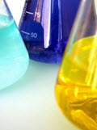

Mathematical Models 2
How to translate from English to Mathematics
The Real World
Most mathematics questions are neat and pure and simple.
But the real world is often "messy": there are facts that get in the way, the numbers don't always work out nicely, we have to convert answers to different units and so on.
On Mathematical Models we showed how to make and use some simple models. Here are some more.
Example: River Cruise
Example: a 3 hour river cruise goes 15 km upstream and then back again. The river has a current of 2 km an hour. What is the boat's speed and how long was the upstream journey?

There are two speeds to think about: the speed the boat makes in the water, and the speed relative to the land:
- Let b = the boat's speed in the water (km/h)
- Let v = the speed relative to the land (km/h)
Because the river flows downstream at 2 km/h:
- when going upstream, v = b-2 (its speed is reduced by 2 km/h)
- when going downstream, v = b+2 (its speed is increased by 2 km/h)
We can turn those speeds into times using:
time = distance / speed
(moving 8 km at 4 km/h takes 8/4 = 2 hours, right?)
And we know the total time is 3 hours:
total time = time upstream + time downstream = 3 hours
Put all that together:
total time = 15/(b-2) + 15/(b+2) = 3 hours
Now we use our algebra skills to solve for "b".
First, get rid of the fractions by multiply through by (b-2)(b+2):
3(b-2)(b+2) = 15(b+2) + 15(b-2)
Expand everything:
3(b2-4)= 15b+30 + 15b-30
Bring everything to the left and simplify:
3b2 - 30b -12 = 0
It is a Quadratic Equation! And solving it gives the solutions:
b = -0.39 or 10.39 (to 2 decimal places)
b =-0.39 makes no sense for this real world question, but b = 10.39 is just perfect!
Answer: Boat's Speed = 10.39 km/h (to 2 decimal places)
And so the upstream journey = 15 / (10.39-2) = 1.79 hours = 1 hour 47min
And the downstream journey = 15 / (10.39+2) = 1.21 hours = 1 hour 13min
Example: Mixing Solutions
You have been asked to provide 150 mL of hydrochloric acid at a 12% concentration

In the cabinet you find:
- one bottle marked 10% HCl (10% hydrochloric acid)
- and another bottle marked 25% HCl (25% hydrochloric acid)
How many mL of each should you use?
- a = quantity of 10% solution
- 150 - a = quantity of 25% solution
total HCl = HCl in 10% solution + HCl in 25% solution
Solve: 18 = 0.1a + 37.5 - 0.25a
"a"s to left, rest to right: 0.25a - 0.1a = 37.5-18
Simplify: 0.15a = 19.5
Answer: 130 ml of 10% solution and 20 ml of 25% solution
Note: I have a "Mix Slider" that could also have been used to solve this